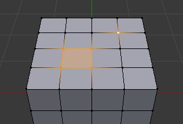

Selecting¶
There are many ways to select elements, and it depends on what Mesh Select Mode you are in as to what selection tools are available. First we will go through these modes and after that a look is taken at basic selection tools.
Selection Modes¶
Select Mode Header Buttons¶
Reference
| Mode: | Edit Mode |
|---|---|
| Menu: | |
| Hotkey: | 1, 2, 3 (Shift Multiple Selection Modes, Ctrl Expand/Contract Selection). |
{kind=link}
Edit Mode selection buttons.
In Edit Mode there are three different selection modes. You can enter the different modes by selecting one of the three buttons in the header.
- Vertices
In this mode vertices are shown as points.
Selected vertices are displayed in orange, unselected vertices in black, and the active or last selected vertex in white.
- Edges
In this mode the vertices are not shown.
Instead the selected edges are displayed in orange, unselected edges black, and the active or last selected edge in white.
- Faces
In this mode the faces are displayed with a selection point in the middle which is used for selecting a face.
Selected faces and their selection point are displayed in orange, unselected faces are displayed in black, and the active or last selected face is highlighted in white.
When using these buttons, you can make use of modifier keys, see: Switching Select Mode.
Almost all tools are available in all three mesh selection modes. So you can Rotate, Scale, Extrude, etc. in all modes. Of course rotating and scaling a single vertex will not do anything useful (without setting the pivot point to another location), so some tools are more or less applicable in some modes.
See Fig. Selection modes. for examples of the different modes.
Multiple Selection Modes¶
By holding Shift-LMB when selecting a selection mode, you can enable multiple Selection Modes at once. This allows you to quickly select Vertices/Edges/Faces, without first having to switch modes.

Vertex mode example. |

Edge mode example. |

Face mode example. |

Mixed mode example. |
{kind=link}
Switching Select Mode¶
When switching modes in an “ascendant” way (i.e. from simpler to more complex), from Vertices to Edges and from Edges to Faces, the selected parts will still be selected if they form a complete element in the new mode.
For example, if all four edges in a face are selected, switching from Edges mode to Faces mode will keep the face selected. All selected parts that do not form a complete set in the new mode will be unselected.
|
Edge mode, the initial selection. |

Switching to Face mode. |
Hence, switching in a “descendant” way (i.e. from more complex to simpler), all elements defining the “high-level” element (like a face) will be selected (the four vertices or edges of a quadrangle, for example).
Expand/Contract Selection¶
By holding Ctrl when selecting a higher selection mode, all elements touching the current selection will be added, even if the selection does not form a complete higher element.
Or contracting the selection when switching to a lower mode.

Expanding to Edge mode. |
X-Ray¶
The x-ray setting is not just for shading, it impacts selection too.
When enabled, selection isn’t occluded by the objects geometry (as if the object was solid).

X-ray disabled. |
{kind=link}
Selection Tools¶
Checker Deselect¶
Reference
| Mode: | Edit Mode |
|---|---|
| Menu: |
This tool applies an alternating selected/deselected checker pattern. This only works if you already have more than one mesh element selected.
Changes the current selection so that only every Nth elements (vertices, edges or faces, depending on the active selection mode) will remain selected, starting from the active one.
In case of islands of selected elements, this tool will affect only the island of the active element (if there is one), or the island of the first element in the order of internal storage (if there is no active element).
- Nth Selection
- Skip every Nth element leaving it selected.
- Skip
- Number of consecutive elements to skip (keep selected) at once.
- Offset
- Offset from the starting point.
Select All by Trait¶
- Non Manifold
Selects the non-manifold geometry of a mesh. This entry is available when editing a mesh, in Vertex and Edge selection modes only.
- Extend
- Lets you extend the current selection.
- Wire
- Selects all the edges that do not belong to any face.
- Boundaries
- Selects edges in boundaries and holes.
- Multiple Faces
- Selects edges that belong to three or more faces.
- Non Contiguous
- Selects edges that belong to exactly two faces with opposite normals.
- Vertices
- Selects vertices that belong to wire and multiple face edges, isolated vertices, and vertices that belong to non-adjoining faces.
- Loose Geometry
- Selects all vertices or edges that do not form part of a face.
- Interior Faces
- Selects faces where all edges have more than two faces.
- Faces by Sides
- Selects all faces that have a specified number of edges.
- Ungrouped Vertices
- Selects all vertices which are not part of a vertex group.
Select Linked¶
Reference
| Mode: | Edit Mode |
|---|---|
| Menu: | |
| Hotkey: | Ctrl-L |
Select geometry connected to already selected elements. This is often useful when a mesh has disconnected, overlapping parts, where isolating it any other way would be tedious.
To give more control, you can also enable delimiters in the Adjust Last Operation panel, so the selection is constrained by seams, sharp edges, materials or UV islands.
With Pick Linked you can also select connected geometry directly under the cursor, using the L shortcut to select or Shift-L to deselect linked.
This works differently in that it uses the geometry under the cursor instead of the existing selection.
Select Similar¶
Reference
| Mode: | Edit Mode |
|---|---|
| Menu: | |
| Hotkey: | Shift-G |
Select geometry that has similar certain properties to the ones selected, based on a threshold that can be set in tool properties after activating the tool. Tool options change depending on the selection mode:
- Vertex Selection Mode:
- Normal
- Selects all vertices that have normals pointing in similar directions to those currently selected.
- Amount of Adjacent Faces
- Selects all vertices that have the same number of faces connected to them.
- Vertex Groups
- Selects all vertices in the same vertex group.
- Amount of Connecting Edges
- Selects all vertices that have the same number of edges connected to them.
- Face Regions
- Select matching features on a mesh that has multiple similar areas based on the topology.
- Edge Selection Mode:
- Length
- Selects all edges that have a similar length as those already selected.
- Direction
- Selects all edges that have a similar direction (angle) as those already selected.
- Amount of Faces Around an Edge
- Selects all edges that belong to the same number of faces.
- Face Angles
- Selects all edges that are between two faces forming a similar angle, as with those already selected.
- Crease
- Selects all edges that have a similar Crease value as those already selected.
- Bevel
- Selects all edges that have the same Bevel Weight as those already selected.
- Seam
- Selects all edges that have the same Seam state as those already selected. Seam is a true/false setting used in UV texturing.
- Sharpness
- Selects all edges that have the same Sharp state as those already selected. Sharp is a true/false setting (a flag) used by the Edge Split Modifier.
- Face Selection Mode:
- Material
- Selects all faces that use the same material as those already selected.
- Image
- Selects all faces that use the same UV texture as those already selected (see UV texturing pages).
- Area
- Selects all faces that have a similar area as those already selected.
- Polygon Sides
- Selects all faces that have the same number of edges.
- Perimeter
- Selects all faces that have a similar perimeter (added values of its edge lengths).
- Normal
- Selects all faces that have a similar normal as those selected. This is a way to select faces that have the same orientation (angle).
- Co-planar
- Selects all faces that are (nearly) in the same plane as those selected.
Edge Loops¶
Reference
| Mode: | Edit Mode –> Vertex or Edge select mode |
|---|---|
| Menu: | |
| Hotkey: | Alt-LMB, or Shift-Alt-LMB for modifying existing selection. |
Holding Alt while selecting an edge selects a loop of edges that are connected in a line end-to-end, passing through the edge under the mouse pointer. Holding Shift-Alt while clicking adds to the current selection.
Edge loops can also be selected based on an existing edge selection, using either .
Note
Vertex mode
In Vertex select mode, you can also select edge loops, by using the same hotkeys, and clicking on the edges (not on the vertices).

Longitudinal and latitudinal edge loops.
The left sphere shows an edge that was selected longitudinally. Notice how the loop is open. This is because the algorithm hit the vertices at the poles and is terminated because the vertices at the pole connect to more than four edges. However, the right sphere shows an edge that was selected latitudinally and has formed a closed loop. This is because the algorithm hit the first edge that it started with.
Face Loops¶
Reference
| Mode: | Edit Mode –> Face or Vertex select modes |
|---|---|
| Hotkey: | Alt-LMB or Shift-Alt-LMB for modifying existing selection. |
In face select mode, holding Alt while selecting an edge selects a loop of faces that are connected in a line end-to-end, along their opposite edges.
In vertex select mode, the same can be accomplished by using Ctrl-Alt to select an edge, which selects the face loop implicitly.

Face loop selection.
This face loop was selected by clicking with Alt-LMB on an edge, in face select mode. The loop extends perpendicular from the edge that was selected.

Alt versus Ctrl-Alt in vertex select mode.
A face loop can also be selected in Vertex select mode. Technically Ctrl-Alt-LMB will select an Edge Ring, however, in Vertex select mode, selecting an Edge Ring implicitly selects a Face Loop since selecting opposite edges of a face implicitly selects the entire face.
Edge Boundary¶
Reference
| Mode: | Edit Mode –> Vertex or Edge select modes |
|---|---|
| Hotkey: | Alt-LMB |
Loop selection on edge boundaries. To extend the selection to all boundaries if the current boundary is already selected use Alt-LMB again.
Edge Ring¶
Reference
| Mode: | Edit Mode |
|---|---|
| Menu: | |
| Hotkey: | Ctrl-Alt-LMB |
In Edge select mode, holding Ctrl-Alt while selecting an edge (or two vertices) selects a sequence of edges that are not connected, but on opposite sides to each other continuing along a face loop.
As with edge loops, you can also select edge rings based on current selection, using either .
Note
Vertex mode
In Vertex select mode, you can use the same hotkeys when clicking on the edges (not on the vertices), but this will directly select the corresponding face loop…

A selected edge loop, and a selected edge ring.
In Fig. A selected edge loop, and a selected edge ring. the same edge was clicked on, but two different “groups of edges” were selected, based on the different tools. One is based on edges during computation and the other is based on faces.
Note
Convert Selection to Whole Faces
If the edge ring selection happened in Edge Select Mode, switching to Face Select Mode will erase the selection.
This is because none of those faces had all its (four) edges selected, just two of them.
Instead of selecting the missing edges manually or by using Shift-Alt- twice, it is easier to first switch to Vertex Select Mode, which will kind of “flood” the selection. A subsequent switch to Face Select Mode will then properly select the faces.
Shortest Path¶
Reference
| Mode: | Edit Mode |
|---|---|
| Menu: | |
| Hotkey: | Ctrl-LMB |

Select a face or vertex path with Ctrl-LMB.
Selects all geometry along the shortest path from the active vertex/edge/face to the one which was selected.
- Face Stepping
- Supports diagonal paths for vertices and faces, and selects edge rings with edges.
- Topological Distance
- Which only takes into account the number of edges of the path and not the length of the edges to calculate the distances.
- Fill Region Shift-Ctrl-LMB
- Selects all elements in the shortest paths from the active selection to the clicked area.
- Checker Select Options
Allows to quickly select alternate elements in a path.
- Nth Selection
- Skip every Nth element, leave unselected.
- Skip
- Number of consecutive elements to skip at once.
- Offset
- Offset from the starting point.
Loop Inner-Region¶
Reference
| Mode: | Edit Mode –> Edge select mode |
|---|---|
| Menu: |
Select Loop Inner-Region selects all faces that are inside a closed loop of edges. While it is possible to use this operator in Vertex and Face selection modes, results may be unexpected. Note that if the selected loop of edges is not closed, then all connected edges on the mesh will be considered inside the loop.

Loop to Region.

This tool handles multiple loops fine, as you can see.

This tool handles “holes” just fine as well.
Boundary Loop¶
Reference
| Mode: | Edit Mode –> Edge select mode |
|---|---|
| Menu: |
Select Boundary Loop does the opposite of Select Loop Inner-Region, based on all regions currently selected, it selects only the edges at the border(contour) of these islands. It can operate in any select mode, but when in Face mode it will switch to Edge select mode after running.
All this is much more simple to illustrate with examples:
Select Boundary Loop does the opposite and forces into Edge Select Mode.
Known Issues¶
N-Gons in Face Select Mode¶
N-gon face having its center dot inside another face.
As already known, faces are marked with a little square dot in the middle of the face. With n-gons that can lead in certain cases to a confusing display. The example shows the center dot of the U-shaped n-gon being inside of the oblong face inside the “U”. It is not easy to say which dot belongs to which face (the orange dot in the image is the object origin). Luckily, you do not need to care much, because to select a face, you do not have to click the center dot, but the face itself.